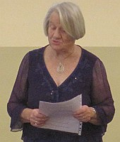
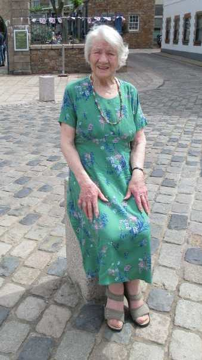

Joan Tapley - J.T.
 
Joan Tapley, née Rondîn, fut médallée en 2022 pouor ses sèrvices à la langue Jèrriaise (British Empire Medal)
L'A B C
L'Achocre
Ach’teu qué j’ai huiptante ans
Ainsi Ouainsi
Antoine lé fait mus!
Autchun rêve mé f'tha
L'Avis
As-tu ouï?
L'Angliéterre Pour La Coupe Du Monde
À La Chasse ès Mulots
L'Assembliée Des Scrutateurs
Eune Belle Pliaiche!
Eune bouonne vielle ségrétaithe!
Lé côtil dans la vallée
La Coue d'Lêzarde
Les Courses
Crise dé nèrs
2007, Ch'est l'tou ès femmes
Daniel, man fis
Donne-mé dg'hielle dans ma veue
Dgieu s'sait dans ma tête
En 'tait-che là un lot!
Èrmerciements dé Brian
L'Escliave Libéthée
Le Gardingni
Lé Grand Jour
Eune grand' achie d'plyie
L'Hainitcheux
Hein Diddle Don
Henri
Jean et Loulou
Lé Jèrriais
Un jour dé souv'nins
Les Mais du Coucou
Man P'tit Couochon
Mardi, comme d'habitude
Mèrcie
Mé v'chîn
Man P’tit Liet
La Mèrveilleuse
Un Meurtre sus le Train, La Meuse
Nous et l'Jèrriais
Lé Pits
La P'tite Sèrvante
Un P'tit d'Un P'tit
Lé P’tit Jean Sarre
Lé R'miède
La Rogodaine
Lé Rouai dé la Danse
Sai-tu tchi qu'est Machinne-chouette?
Lé Scélérat
D'la Sèrcl'ye
Lé Sommé
Tchestchions ès Gris-Ventres
Tèrre Neuve Èrcliâmée
Tout change
La Trouvâle
Les vaques dé Jèrri
La Visite dé St. Nicolas
Viyiz étout:
L's auteurs en langue Jèrriaise